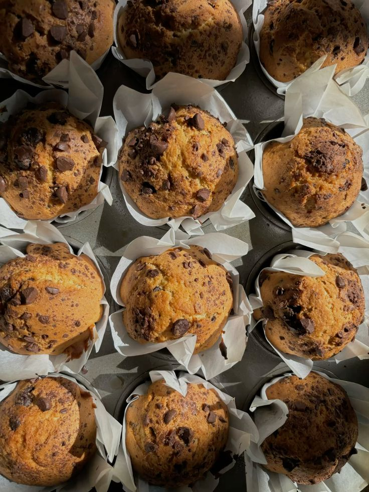

Ingredients
- 2 cups all-purpose flour
- 3/4 cup sugar
- 2 tsp baking powder
- 1/2 tsp baking soda
- 1/4 tsp salt
- 1 cup plant-based milk
- 1/3 cup vegetable oil
- 1 tsp vanilla extract
- Optional: chocolate chips, blueberries, or nuts
Instructions
- Preheat oven to 375°F (190°C) and line a muffin tin with paper liners.
- In a bowl, mix flour, sugar, baking powder, baking soda, and salt.
- In another bowl, whisk plant-based milk, oil, and vanilla extract.
- Combine wet and dry ingredients until just mixed.
- Fold in optional mix-ins like chocolate chips or blueberries.
- Fill muffin cups 3/4 full and bake for 18–20 minutes until a toothpick comes out clean.
- Let cool for 5–10 minutes before serving.